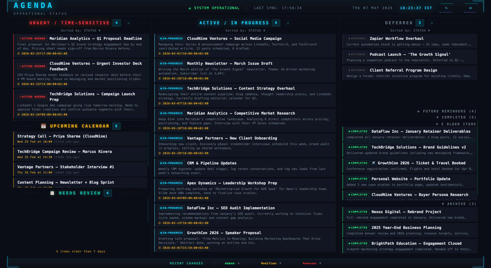
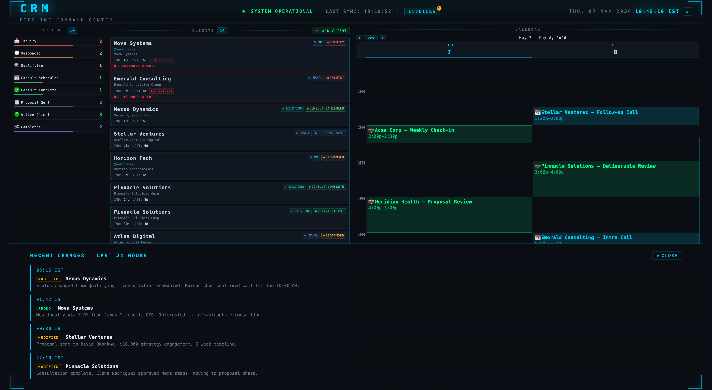
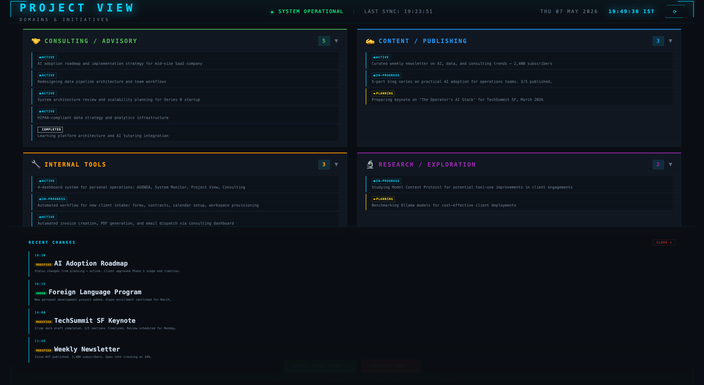
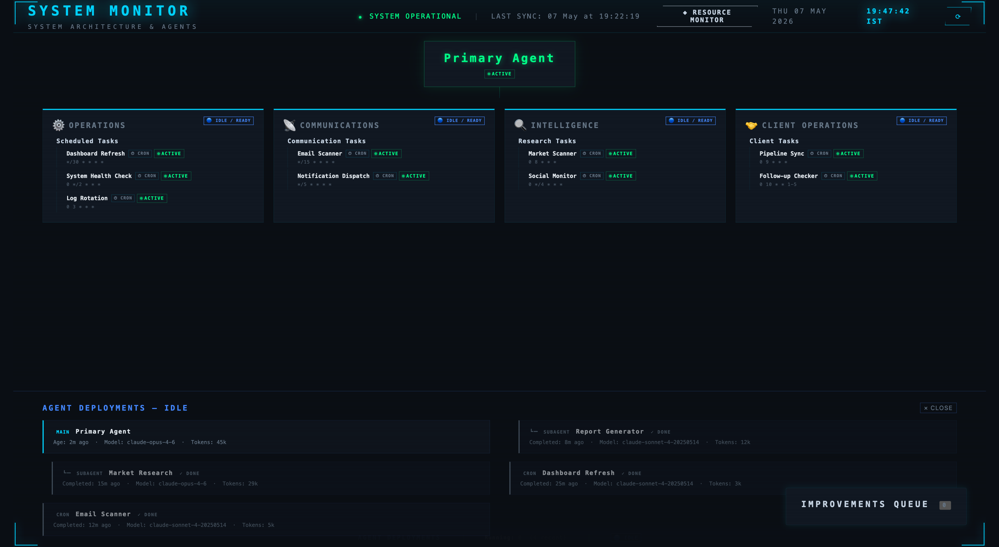

01 / Operational priorities
Agenda
Real-time operational status, urgent work, calendar context, review queues, and recent activity in one continuously updated command surface.
Open interactive demoInteractive dashboard suite
Open the demos to see how priorities, client relationships, project status, and AI infrastructure can become coherent, inspectable work surfaces instead of scattered status checks.
Explore the suiteAgendaPriorities, deadlines, reviews, and recent activity.
CRMPipeline, clients, follow-ups, and calendar context.
Project ViewInitiatives, functions, and live status intelligence.
System MonitorAgents, models, schedules, tools, and diagnostics.
Live operating surfaces
Each demo is an interactive application, not a static mockup. Open any view to explore the interface directly.

01 / Operational priorities
Real-time operational status, urgent work, calendar context, review queues, and recent activity in one continuously updated command surface.
Open interactive demo
02 / Client operations
Pipeline stages, client records, invoice signals, response-needed alerts, and scheduled follow-ups brought together with current calendar context.
Open interactive demo
03 / Portfolio intelligence
Organize and track individual initiatives, function areas, and projects with live AI-powered status intelligence.
Open interactive demo
04 / System observability
Real-time monitoring of AI agents and subagents, scheduled operations, tools, skills, active AI models, and system diagnostics.
Open interactive demoDesigned around the operation
These four views demonstrate one approach. A client system can combine different data sources, controls, approvals, alerts, and operating views around the decisions that actually matter.
Discuss your operating system